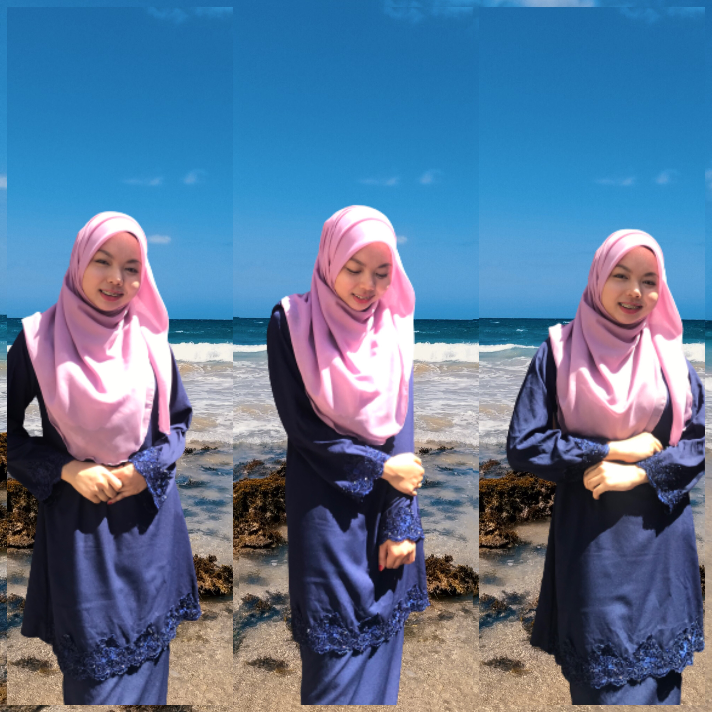

Assalamualaikum.
My name is Nik Nur Zulaikha Suhailie Binti Mohd Zukri. I am 21 years old. Most of my friend call me Ikha but my family call me Elly. I was born on 3rd December 2001 in Hospital Raja Perempuan Zaibab II, Kota Bharu, Kelantan. I have 4 siblings and I am the only girl. My father name is Mohd zukri bin jusoh and my mother name is Raja Nurlela binti Raja Abdul Rahim. They married at young age which is my father is 20 years old and my mother is 17 years old. This because my father is soldier at that time and must go to Sabah for a few years. I live in sabah for about 5 years, after that my father got to change to Terengganu. I go to Terengganu. After that in 2006 my mother got pregnant to my brother which is Nik Muhammad Zul-Aiman Hafizi. The different age between me and him is 5 years. After 4 years we move to Kota Bharu , Kelantan. Next for my third and four brother they was born in 2008 and 2010.
When my age is 14 years old, my parent got divorce. After that I stay with my youngest brother which is that time 6 years old at home. My 2 other brother need to stay with my grandmother. This because my mother started to working at Kuala Lumpur and need time to stable her financial. After that when I was 15 years old I and my youngest brother move to Dungun, Terengganu to stay with my uncle because it more safety rather than live alone at Kelantan. After 1 years, my mother come and pick me with my youngest brother to Kuala Lumpur. After that, she also take my 2 other brother who stay with my grandmother. We live together again and we went to school in Kuala Lumpur. Me go to SMK Puteri Titiwangsa. This school was a girls school student. It was a great experience to be there and meet my new friend.
After that, when I finish my SPM, I work while waiting my result. I work at Kenny Rogers Roaster at Sunway Putra Mall Kuala Lumpur. After 3 month my mother have to change her workplace so we must move to Shah Alam.She work at MSUMC In Shah Alam we live at Menara U, Seksyen 13 Shah Alam for about 3 years. This time also, I got to enter the university which is UiTM Rembau for about 1 years and after that the class only conducted by online because of covid-19 pandemic. After that my mother need to work at others branch which is Kedah Medical Center. So we move to Kedah until now.
When study online, I choose to work to help my family. I study at the day and work at the night shift. I stated to work since I finished my SPM until now. When working at night shift the break time, I will use to settle my assignment. The struggle is very hard but, with all people support from my surrounding, I can be strong and happy without feel down and give up. In my life I have two motivation quote that I like which is “When you give up on life, never give up on yourself, because there is so much for you to keep on giving!”
“When you give up on life, never give up on yourself, because there is so much for you to keep on giving!”-NikZulaikha